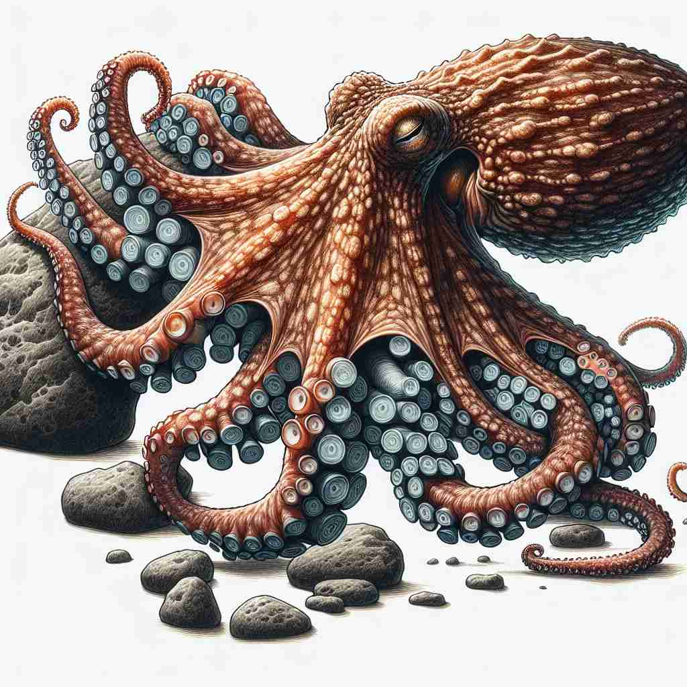
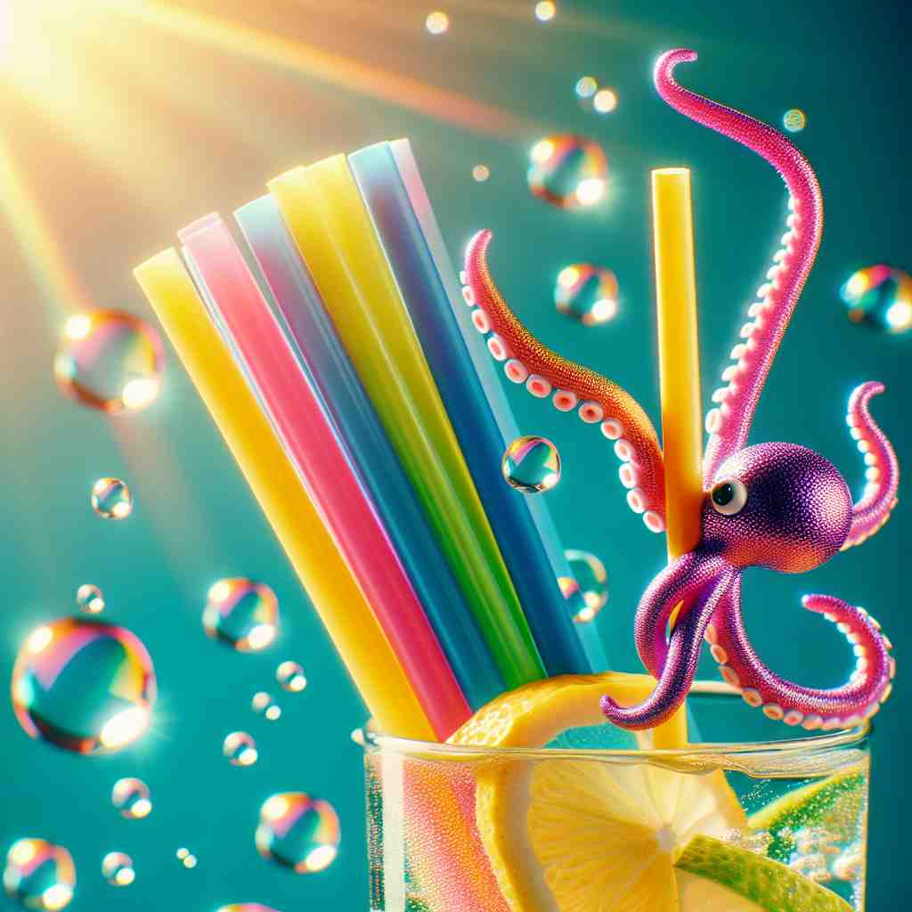

💬 The glass has a drinking sucker to sip water.

💬 The drink has a colorful sucker straw.

💬 The octopus uses its suckers to hold onto the rock.

💬 The octopus is holding a sucker straw in the colorful drink.
🔈 ['sʌkə]
🗝️ n. a person or thing that sucks
🖼️ 在一个水族馆里，一只章鱼正用它的吸盘牢牢抓住玻璃墙，展示了它作为‘sucker’的强大吸附能力。这场景形象地说明了某物作为‘sucker’的吸附特性。
🔍 想象一个吸盘或吸管的动作，这就是'sucker'的核心含义。从这个吸取的动作，我们可以联想到容易被"吸引"（欺骗）的人，需要吮吸的糖果，从植物主干吸取养分的新芽，以及泵中进行吸取动作的部件。记住这个核心的"吸"的动作，就能轻松理解和记忆'sucker'的各种含义。
💬 The glass has a drinking sucker to sip water.
💬 The drink has a colorful sucker straw.
💬 The octopus uses its suckers to hold onto the rock.
💬 The octopus is holding a sucker straw in the colorful drink.
🌳 “sucker”由基本词 “suck” （吸）加上名词后缀 “-er” 组成，表示 “吸”的动作执行者，因此可以指代一些以“吸”为基础行为的东西或人。例如，吸盘或容易上当的人。
💡 记忆 “sucker” 可以通过联想“suck”的动作，再加上“-er”表示“做这个动作的人或物”，例如容易被骗的人像被‘吸走’了判断力。
🗝️ n. a gullible or easily deceived person
🖼️ 在一个街头魔术表演中，一位观众目不转睛地盯着魔术师的手法，完全相信了眼前的幻象，而旁边的人微笑着低声说：‘看，他真是个 sucker。’这个场景展示了‘sucker’作为轻信易被骗之人的含义。
💬 Don't be a sucker; that deal is too good to be true.
❓ 比喻像吸盘一样容易被"吸附"（欺骗）
🗝️ n. a lollipop
🖼️ 在一个儿童生日派对上，孩子们手里拿着五颜六色的糖果，一个小女孩开心地舔着一个大大的棒棒糖，说：‘这是我最喜欢的 sucker！’这个场景展示了‘sucker’作为棒棒糖的含义。
💬 The child happily licked the cherry-flavored sucker.
❓ 需要吮吸的糖果
🗝️ n. a shoot sprouting from the base of a tree or plant
🖼️ 在一个果园里，园丁认真地查看果树根部，注意到有几个新的枝芽。他记录下这些‘sucker’需要修剪，以确保主树的健康成长。这个场景展示了‘sucker’作为从植物基部生长出的枝芽的含义。
💬 The gardener removed the suckers to maintain the shape of the tree.
❓ 像吸管一样从主干吸取养分的新芽
🗝️ n. the piston of a suction pump
🖼️ 在一个古老的农舍内，一位农夫正在使用手动水泵。他上下拉动泵把手，看着泵内的活塞快速移动，这个‘sucker’正忙碌地抽取地下水。这个场景展示了‘sucker’作为吸入泵的活塞的含义。
💬 The plumber replaced the worn-out sucker in the old water pump.
❓ 泵中执行吸取动作的部件
🗝️ n. a person who is easily persuaded to buy something
🖼️ 在一个热闹的市集上，一个推销员正热情地向路人展示他的产品。一位犹豫不决的顾客最终被说服购买，推销员心想：‘这真是个 sucker。’这个场景刻画了‘sucker’作为容易被说服购买东西的人的含义。
💬 Salespeople often target suckers who can't resist a bargain.
❓ 容易被推销手段"吸引"的人